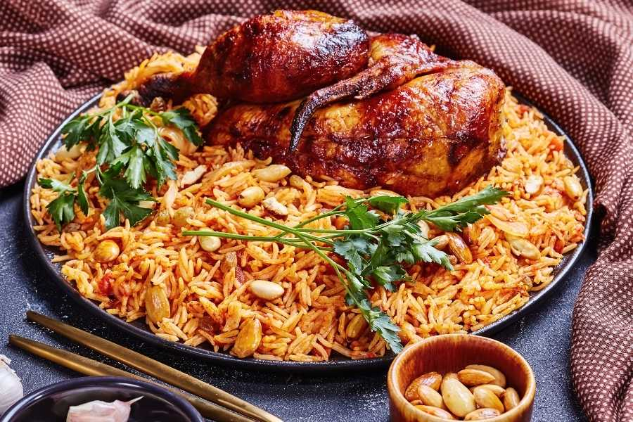

Chicken Kabsa

Description
Kabsa is widely recognized as the national dish of Saudi Arabia, but is eaten across the Middle East. Other than a few differences the characteristics of the dish remain the same in most countries.
Kabsa literally translated from the Arabic means pressed which is derived from the way it is cooked. The ingredients are piled one on top of the other and cooked in one pot rice dish.
Ingredients
- 6 Chicken Thighs/Legs
- 2 tbsp Vegetable Oil
- 2 Cloves whole
- ⅛ tsp Nutmeg
- ⅛ tsp Cumin
- ⅛ tsp Coriander
- ½ tsp Saffron
- ¼ tsp Cardamom
- ½ tsp Cinnamon
- ½ tsp Allspice
- ¼ tsp White Pepper
- ½ tsp Dried Lime Powder
- 2½ tsp Salt
- ¼ cup Butter
- 1 Onion diced
- 6 Garlic Cloves minced
- ¼ cup Tomato Paste
- 1 can Diced Tomatoes
- 2½ cups Basmati Rice
- 5 cups Chicken Broth
- ¼ cup Raisins
- ¼ cup Slivered Almonds
- Pinch Black Pepper
Steps
- Preheat oven to 400ºF (200ºC).
- Place chicken pieces in a bowl, using your hands rub chicken with vegetable oil until well covered. Place on a tray and bake for 30 minutes.
- Mix all spices and salt in a small bowl.
- Rinse the rice in a sieve with running water until water runs clear.
- Meanwhile, melt butter in a pan, sauté onions and garlic until translucent and soft. Add diced tomatoes and tomato paste to create a sauce.
- Add the chicken and stir until well coated with the tomato sauce.
- Add rice and spices. Mix well.
- Add chicken broth and bring to a boil.
- Reduce heat to a simmer. Cover loosely, leaving a gap for steam to escape.
- Cook for roughly 20 minutes until the rice is fully cooked.
- Toast slivered almonds in a pan over medium-high heat until browned.
- Spoon rice onto a serving dish, placing the chicken pieces on top. Sprinkle with browned almonds, raisins, and a pinch of black pepper.
- Add more salt and pepper to taste.
Home